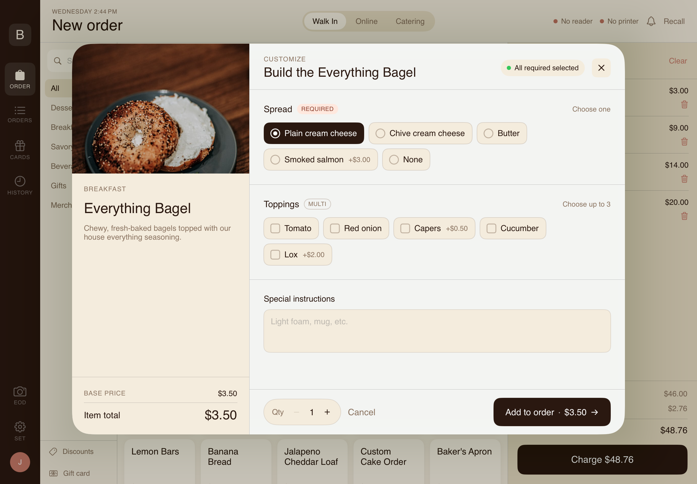

Knot
A full business operating system for small businesses — competing directly with Toast, Square, and 7shifts. One backend, one database, every surface a business needs to run.
Landing Page
Scroll inside the embed to explore. Open the full site ↗ for the best experience.
You're on mobile — open the full site ↗ for the best experience.
The Problem
Small businesses run on fragmented tools — a POS from one vendor, a website from another, employee scheduling from a third. Toast charges $200–500/month. Square charges per transaction and per feature. 7shifts charges per employee just to manage a schedule. None of them connect. None were built for the independent business owner who needs everything to work without a developer on call.
The Platform
Knot is one Node/Express API serving every surface a business needs — customer website, customer account portal, admin dashboard, iOS customer app, iOS POS, and iOS employee app — all reading from one Supabase database. A change made anywhere propagates everywhere instantly. Menu update from the admin? The website, the customer app, and the kitchen display reflect it in real time. No redeploy. No developer required.
The Admin Dashboard
A protected single-page dashboard that gives the business owner full control over their storefront without touching code or a database. Every admin route verifies a JWT server-side — the security lives on the server, not in the browser.
- Live order and revenue overview
- Order management and fulfillment
- Revenue charts and breakdowns
- Menu CMS — items, photos, sale pricing
- Inventory tracking per item
- Coupon creation and management
- Hero image and banner CMS
- Store hours editor
- Feature toggles — ordering, subscriptions
- Gift card management
- Subscription management
- Customer list and purchase history
- Contact form submissions
- Event booking inquiries
- Employment applications
- Staff accounts and roles
- Kitchen prep list from pending orders
iOS POS
A native iPad point-of-sale that connects directly to the same Supabase backend — orders placed on the POS appear instantly in the admin dashboard and kitchen queue.



Built by Jaiden Henley · Part of the Knot platform
The Employee Layer
KnotEmployee is the staff management surface of Knot — a native iOS app that handles everything 7shifts charges per seat for. Managers get a drag-and-drop schedule builder, overtime alerts, and labor cost reporting. Staff get clock-in/out with break tracking, shift swaps, time-off requests, and direct messaging. All real-time via Supabase Realtime websockets, push notifications via a custom Deno Edge Function calling APNs directly.
Deployments
Knot is multi-tenant from day one — every table carries a tenant_id, so onboarding a new business is one database row and a frontend deploy. Currently live across four verticals.
The Outcome
Zero commission per order versus 15–30% on delivery platforms. Zero monthly platform fee versus $200–500/month for Toast or Square. The admin dashboard gives a business owner complete control over their storefront, staff, and customer relationships from a single screen. Four businesses are live on the platform today. Every new deployment is one database row and a frontend deploy.